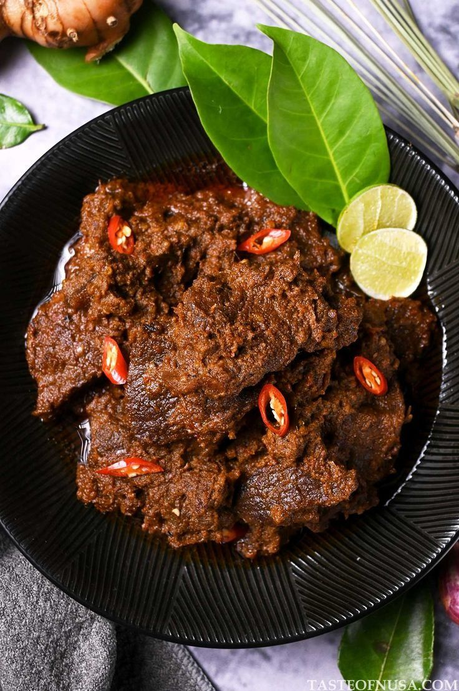
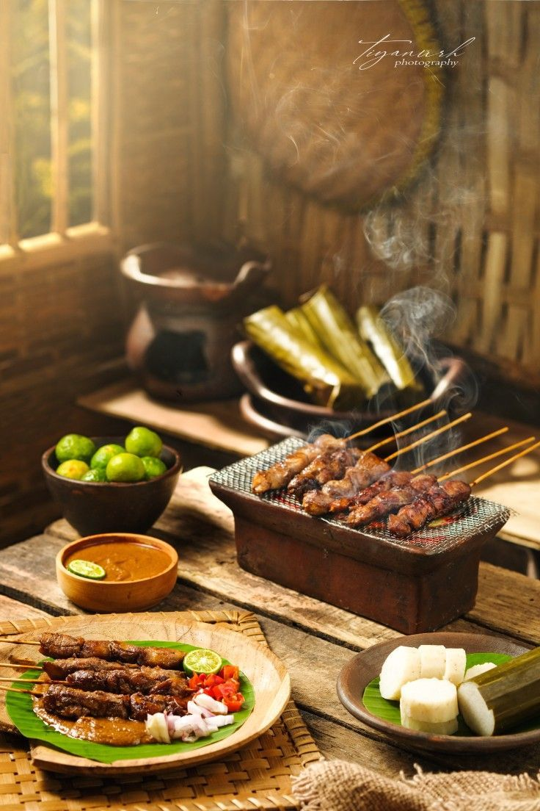
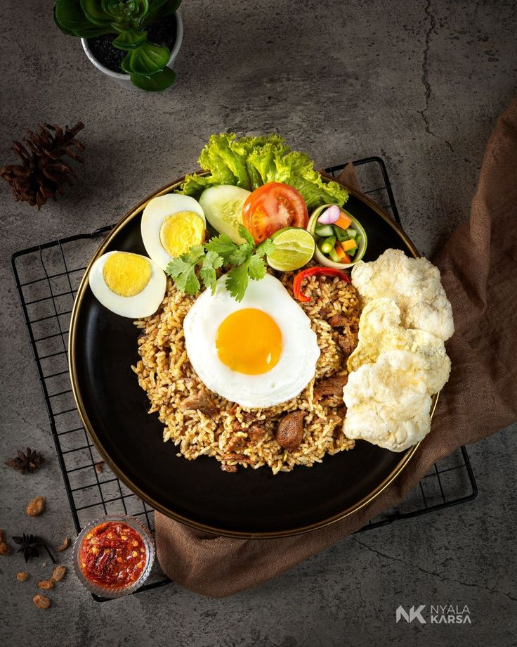

Rendang

Rendang adalah masakan daging asal Indonesia yang berasal dari Minangkabau.
Makanan ini terkenal karena cita rasanya yang unik.
Rendang terbuat dari dagin sapi yang dimasak secara pelan-pelan
sehingga dalam proses pembuatannya membutuhkan waktu yang lama.
Dalam beberapa tahun terakhir, rendang masuk dalam daftar 50 makanan
terenak di dunia versi CNN.
Sate

Sate adalah makanan yang terbuat dari potongan daging, seperti ayam, sapi, atau kambing
yang ditusuk menggunakan tusukan dari bambu dan kemudian dipanggang di atas bara api (arang).
Daging sate biasanya dibumbui dengan rempah-rempah khas seperti kecap manis,
bawang putih, ketumbar, dan jintan. Sate sangat populer di Indonesia dan memiliki
berbagai variasi tergantung daerah asalnya. Misalnya Sate Madura yang rasanya cenderung manis dan
Sate Padang yang rasanya cenderung pedas.
Nasi Goreng

Nasi goreng adalah hidangan nasi yang sudah masak yang digoreng dengan bumbu-bumbu seperti
bawang putih, bawang merah, cabai, kecap manis, dan rempah lainnya.
Nasi goreng biasanya ditambahkan lauk pelengkap seperti telur, potongan ayam,
sosis, bakso, udang, dan masih banyak lainnya.